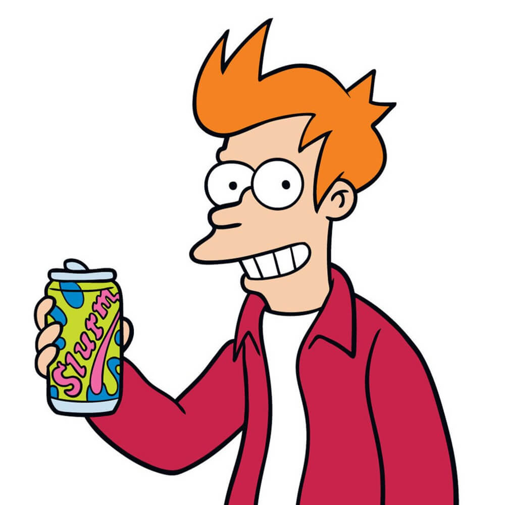

THE GENIUSES BEHIND OUR WORK
OUR TEAM

Philip J. Fry
delivery boy
Is a fictional character and the protagonist of the animated sitcom Futurama. He is a slacker
delivery boy from the 20th century who becomes cryogenically frozen and reawakens in the 30th
century to become a delivery boy there with an intergalactic delivery company Planet Express.
VIEW PROFILE